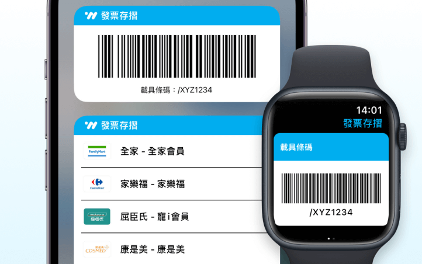
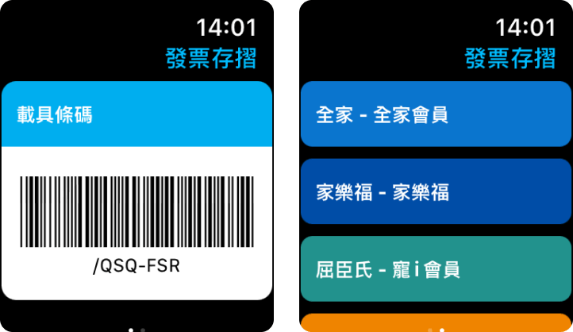

什麼是桌面小工具？
桌面小工具是一種可以放置在手機桌面或智慧手錶上的便利程式，讓您在結帳時可以快速出示發票載具或會員卡條碼，無需再點開 APP。
使用小工具的好處

快速出示
結帳時無需再開 APP

方便操作
會員卡與條碼一起掃
怎麼設定 iPhone 的小工具？
- 在桌面上長按任意空白處。
- 點選左上角的「+」圖示。
- 找到「發票存摺」App。
- 選擇要加入的小工具尺寸。
- 將小工具拖曳到桌面上即可。
怎麼設定 Apple Watch 的小工具？
- 開啟 iPhone 上的「Watch」App，點選「我的手錶」頁面。
- 在「可用APP」區塊中，找到「發票存摺」App，點選「安裝」。
- 如果畫面顯示「尚未登入」，請先開啟手機上的發票存摺 App 並登入與綁定載具。
- 完成後即可在 Apple Watch 上顯示載具條碼，也能右滑顯示會員卡功能喔！
怎麼在 Apple Watch 上建立捷徑？
- 長按錶面，點選「編輯」。
- 滑動錶面至「複雜功能」，點選可新增的版位。
- 在「可用 App」清單中，找到「發票存摺」App 並新增。
- 回到桌面後，點擊發票存摺捷徑即可直接開啟 App 並出示條碼。
並非所有桌面都支援發票存摺的捷徑，通常選擇較小範圍的功能區域才可加入
為什麼我的桌面小工具會消失？
由於 Apple 手機系統問題，當您在更新 app 後可能會無法正常顯示條碼，或是您曾移除過發票存摺 app。
請先嘗試「重新開機」，大多時候小工具能即刻恢復正常。若仍無法正常，請按照上述步驟重新加入小工具。
我們也會持續追蹤 Apple 是否有推出修正的系統版本，造成不便，敬請見諒。